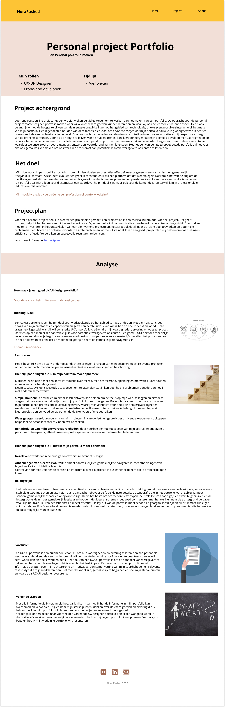
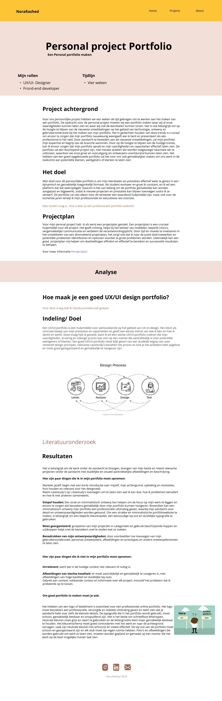
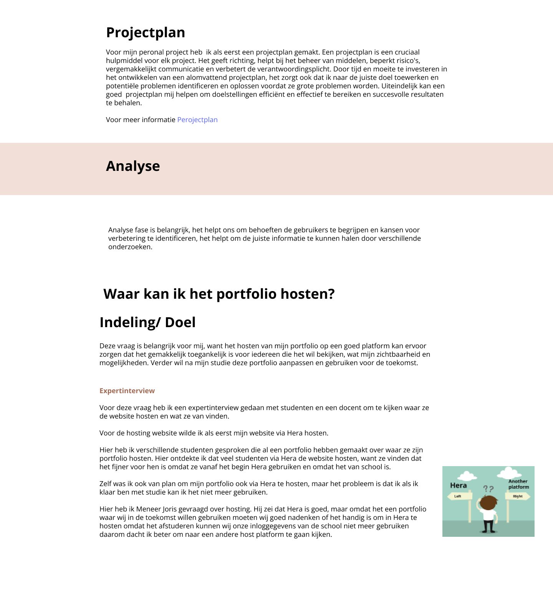
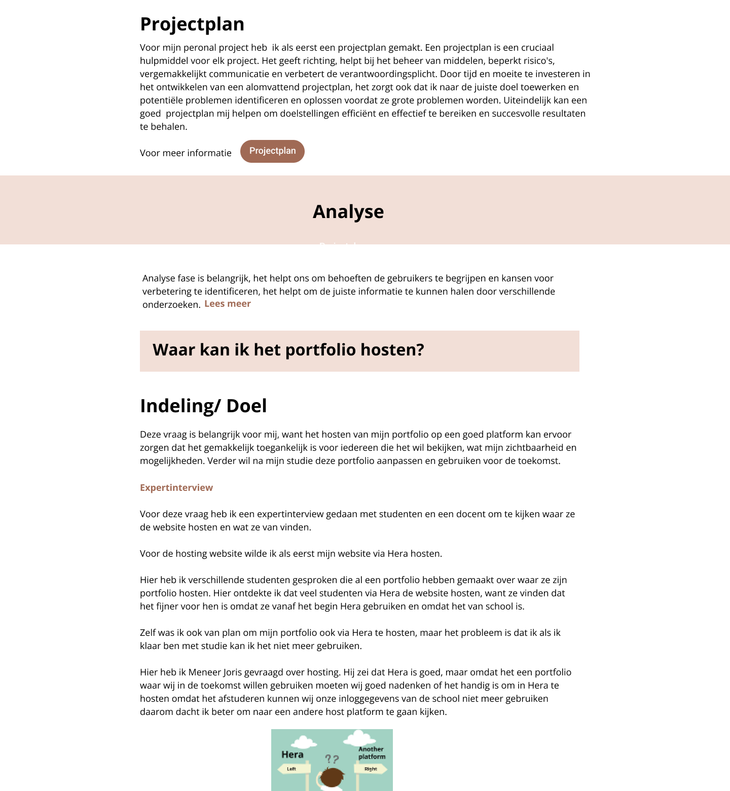

Personal project Portfolio waar ik mijn ervaring en designproces laat zien
Rol
UI/UX designer
tijdlijn
4 weken
Achtergrond
Voor ons persoonlijke project hebben we vier weken de tijd gekregen om te werken aan het maken van een portfolio dat
zal dienen als opslagplaats voor alle toekomstige producten die we gedurende het semester zullen maken.
Doel
Het doel is om een gecentraliseerde en georganiseerde locatie te hebben waar we ons werk
kunnen laten zien en onze vaardigheden en prestaties kunnen demonstreren.
De opdracht
De opdracht voor de personal project is om een portfolio te maken waar ik al mijn vaardigheden kan
laten zien en waar ik ook de leerdoelen kan tonen. Het is ook belangrijk om op de hoogte te blijven van de nieuwste
ontwikkelingen op het gebied van technologie, ontwerp en gebruikersinteractie bij het maken van mijn portfolio. Het in gedachten
houden van deze trends was belangrijk om ervoor te zorgen dat mijn portfolio nauwkeurig weergeeft wie ik ben. De portfolio moet een
doorlopend project zijn, met nieuwe stukken die worden toegevoegd naarmate ik ze voltooi, waardoor ik mijn groei en vooruitgang als UX-designer
voortdurend kan laten zien. Het hebben van een goed opgebouwde portfolio zal het voor mij ook gemakkelijker maken om mijn werk in de toekomst aan
werkgevers of klanten te laten zien.
Project plan
Een projectplan is heel belangrijk voor het succes van een project omdat het taken, tijdlijnen en te leveren producten beschrijft.
Het definieert de scope van het project, verder wordt ook vermeld wat de risico’s zijn en hoe ik het kan voorkomen. Het projectplan heeft mij geholpen om
het project met succes, op tijd afgerond te krijgen.
- Wat voor tools/ Programmeertalen zijn er om een portfolio te maken? Lees minder
Methodes:
• Literatuuronderzoek • Expert Interview
Na de informatie die ik verzameld heb van het literatuuronderzoek en expertinterview ging ik mijn personal showcase porfolio UI/ UX designer mijn
portfolio in HTML, CSS en JS doen, omdat ik hier al kennis van heb. Er zijn verschillende templates/frameworks waar ik mijn portfolio kan bouwen,
maar aangezien de tijd en mijn ervaring heb ik er geen gebruik van gemaakt. Verder door mijn onderzoek heb ik ontdekt dat HTML, CSS en JS vermeld in de top 5
van meest gewilde webontwikkelingstalen voor 2023 en door het gebruiken van HTML, CSS en JS kon ik mijzelf verbeteren en meer erover leren. Deze zijn ook
geadviseerd door de docenten.
Om te beginnen was ik van plan mijn portfolio via Hera te hosten. Nadat ik het echter met een docent had besproken en hij zei dat Hera misschien
niet de beste optie voor mij was, aangezien ik van plan was mijn portfolio na mijn afstuderen te gebruiken. Daarom ging ik op zoek naar andere hostingplatforms waarmee
ik mijn portfolio buiten school kan hosten. Op aanraden van mijn docent heb ik gekeken naar Vercel, die bij GitHub hoort en bekend staat als een betrouwbaar hostingplatform.
Na onderzoek te hebben gedaan, ontdekte ik dat Vercel inderdaad een uitstekend platform was om mijn website te hosten. Het is gratis en dat wanneer ik de aanpassingen in mijn
website doe en via GitHub push wordt het meteen aangepast zonder dat ik opnieuw mij folders en files moet updaten. Gezien deze voordelen heb ik besloten om mijn
portfolio op Vercel te hosten.
- Hoe maak je een goed UX/UI portfolio? Lees minder
Methodes:
• Expert Interview • Litertauuronderzoek
Het begrijpen van de doelgroep was belangrijk voor het creëren van een succesvol portfolio op het gebied van UI/UX-design. De doelgroep bestaat uit docenten en bedrijven
die op zoek zijn naar specifieke vaardigheden en ervaring, zoals vaardigheid in designsoftware, user-centered designprincipes, gebruikersonderzoek, relevant werkportfolio.
Interviews met experts en literatuuronderzoek heeft mij geholpen om te begrijpen hoe ik een goed portfolio kan creëren. Een goed portfolio moet informatie bevatten over mijn
achtergrond en motivaties, een samenvatting van mijn vaardigheden en relevante casestudy's die mijn werk laten zien. Het moet beknopt zijn, gemakkelijk te begrijpen en snel mijn
sterke punten en ervaringen als UX/UI-designer over te brengen. Verder moeten de contact gegevens makkelijk te vinden zijn.
- Hoe ziet een UX/UI designer portfolio eruit Lees minder
Methodes:
• Available product analyse
Door de availbale product analyse waar ik verschillende Portfolio’s heb bekeken, had ik meer inzicht over hoe ik mijn portfolio kan maken. Er waren een paar punten die ik heel
belangrijk vond die ik kan toepassen in mijn portfolio. Zoals het geven van een korte beschrijving van de projecten in de homepagina, duidelijk beschreven of het werk in samenwerking
of individueel is gedaan. Een duidelijke beschrijving van de opdracht, het probleem en het doel van elk project en wat de resultaten zijn.
Het maken van een flowchart heeft mij geholpen om een idee te krijgen over hoe ik de inhoud en structuur van het project kan organiseren per project.
Schetsen
Schetsen was een belangrijk onderdeel van mijn designproces, omdat het me geholpen heeft om een snel en betere design te ontwikkelen.
Door het onderzoek die ik eerder heb gedaan tijdens de analysefase, feedback van docenten en studenten
kon ik mijn schetsen verfijnen, waardoor ik een prototype kon maken.
Tijdens het schetsen/ feedback heb ik een paar punten meegenomen:
- Over mijzelf informatie te verstrekken is beter in een aparte pagina te doendan in de homepagina.
- Duidelijk maken aan welke projecten ik gewerkt heb.
- Beter de informatie in een pagina te verwerken, maakt het makkelijk om te begrijpen.
- CV beter om als pdf te maken, want dan kunnen ze de CV downloaden als het nodig is.
Styleguie
Nadat ik een onderzoek heb gedaan naar de kleuren die ik in mijn portfolio kan gebruiken had ik twee verschillende kleuren die ik leuk vond. Hier heb ik A/B test
gedaan heb om te kijken wat de docenten en studenten van de kleuren vinden. Ik kon een beslissing nemen om kleurpallet 1 met geel/pranje kleur te gebruiken, omdat
het meer persoonlijk is, fijn voor de ogen en het gaat over creativiteit, minimalistisch en professionele uitstraling en dit is wat ik eigenlijk wil. Verder heb ik een
onderzoek gedaan naar fonts en ik vond Open Sans een fijn font, want Open Sans is een lettertype met een vriendelijke uitstraling, waardoor het gemakkelijk te lezen is.
Verder het creëren van een logo was een mooi toevoeging voor mijn portfolio, want ik kijk ook naar details en door de feedback kon ik ook mijn mening van de logo kleur bevestigen,
maar toch toen ik de portfolio heb gebouwd vond ik het logo minder mooi waardoor ik het veranderd heb.
Hier is de styleguide die ik in mijn portfolio heb gebruikt.
Prototype
Zodat ik de schetsen en mijn ideeën voort kan brengen, heb ik besloten om met behulp van Figma een klikbaar
prototype te gaan maken. Ik weet dat
een klikbaar prototype niet alleen anderen helpt om de concept beter te begrijpen, maar het geeft mij een ander
inzicht op het concept.
Hier kunt de prototype vinden.
Tijdens het productontwikkelingsproces heb ik verschillende feedbacksessies en tests uitgevoerd om erachter te komen of mijn product gebruiksvriendelijk is,
makkelijk te navigeren en of er aanpassingen zijn die ik in mijn product mee moet nemen.
Hierdoor kon ik waardevolle inzichten van gebruikers verzamelen en beslissingen nemen om ervoor te zorgen dat het eindproduct gebruiksvriendelijk is en voldoet
aan de behoeften van de gebruikers.
- Expert Reviews.
De feedback die ik van mijn docent had ontvangen was dat het gehele plaatje overzichtelijk is, het er goed uitziet en netjes ontworpen is.
Echter waren er een paar punten waar ik naar moest kijken:
- De lijn tekst is heel lang, deze moet korter omdat het dan makkelijker te lezen is.
- Afbeelding moet bruikbare content bevatten, proberen zelf te maken i.p.v te algemene afbeeldingen te gebruiken en liefst zo veel mogelijk, maar dat kan niet altijd.
- Moet makkelijk te scannen en te lezen zij dat wat belangrijk punten zijn, bijvoorbeeld belangrijke dingen uitlichten, groter maken of meer ruimte geven, want anders wordt het te veel tekst.
De feedback die ik van medestudenten en van anderen heb ontvangen dat het heel mooi is en de combinatie van de kleuren zijn heel mooi en duidelijk en ze vonden dat de projecten in de navbar te hebben heel handig is.
Hier heb ik paar feedback ontvangen:
- In de homepagina is de tekst beter om in het midden te hebben.
- In de personal pagina dat de lijn tekst heel lang is, dus deze moet korter.


- A/B testing
Hier heb ik A/B test met een paar studenten en met anderen mensen gedaan.
Hier zijn de resultaten van de test:
- Ze vonden De inklapbare functie met een kleur duidelijker.
- De button is heel handig en duidelijk is dat ze op de button moeten klikken.
- De tekst in het midden is heel handig, want het is meer overzichtelijk.


Usibility testing
Nadat ik klaar was met het maken van mijn portfolio heb ik usibility test met paar studenten en met andere mensen gedaan.
Het doel van de test is om te kijken of alle informatie duidelijk is en of het makkelijk te navigeren is.
Hier zijn de resultaten van de test:
- De homepagina ziet er mooi uit en dat de tekst beweegt is een leuke toevoeging.
- De navigatiebar met projecten vonden ze heel handig.
- Ze vonden de inklapbaar functie met een kleur in de project pagina duidelijk.
- Ze vonden de inklapbare functie met een kleur in de project pagina duidelijk.
Conclusie
“Hoe creëer je een professioneel portfolio website?”
Mijn persoonlijke showcaseportfolio voor UI/UX-ontwerp heb ik in HTML, CSS en JS gemaakt. Het begrijpen van de doelgroep,
waaronder docenten en bedrijven die op zoek zijn naar specifieke vaardigheden en ervaring, was essentieel voor het creëren van
een succesvol portfolio. Het portfolio moet achtergrond- en motivatie-informatie bevatten, een samenvatting van vaardigheden en
relevante casestudy's die werk demonstreren. Het portfolio moet beknopt en gemakkelijk te begrijpen zijn en snel sterke punten en
ervaringen als UX/UI-ontwerper overbrengen. Door beschikbare productanalyses had ik meer inzicht in het creëren van een effectief portfolio.
Uiteindelijk heb ik mijn website in Vercel gehost omdat het een goed platform is. De feedback en testsessies die ik kreeg van docenten, medestudenten
en anderen hielpen me bij het maken van een betere versie van mijn portfolio. Tijdens het testen van de voorlopige versie was de feedback positief,
ze waren enthousiast erover en dat het makkelijk te navigeren is. De kleuren vonden ze het heel mooi, de project stappen zijn duidelijk en dat de portfolio
website mooi gemaakt is. Deze feedback was van meerwaarde om te bevestigen dat de wijzigingen die ik had aangebracht resulteerden in een beter voorlopig
resultaat van mijn portfolio.
Volgende stappen
Gedurende dit semester zal ik mijn portfolio blijven verbeteren door nieuwe materialen toe te voegen en tests uit te voeren om de ontwikkeling ervan te bevorderen